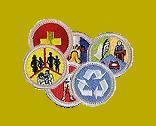

|
Calendar
Pictures Bulletin Board Patrols Contact Us Links Information Permission Slip |
Welcome to the Troop 22 website. This website is open to both Troop 22 scouts and visitors. Please feel free to visit any or all pages on this site.
The Scout OathOn my honor, I will do my bestTo do my duty, to God and my country, And to obey the scout law. To help other people at all times, to keep myself physically strong, mentally awake, and morally straight. The Scout LawA scout is:Trustworthy Loyal Helpful Friendly Courteous Kind Obedient Cheerful Thrifty Brave Clean Reverent The Scout MottoBe preparedThe Scout SloganDo a good turn daily |
|
 |